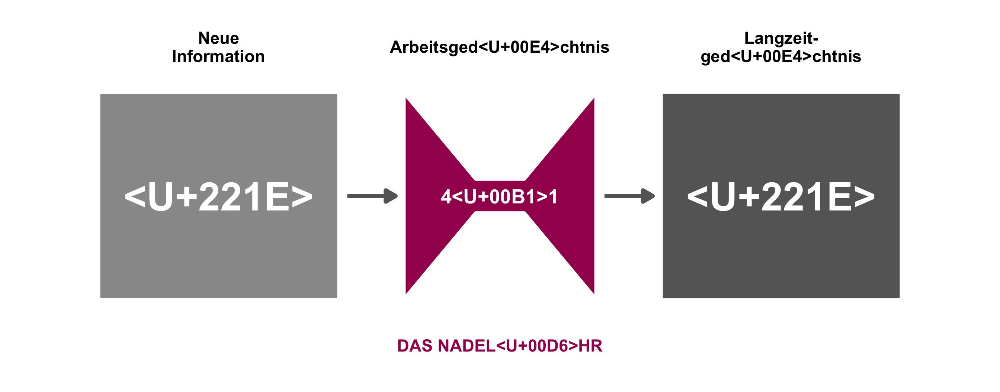
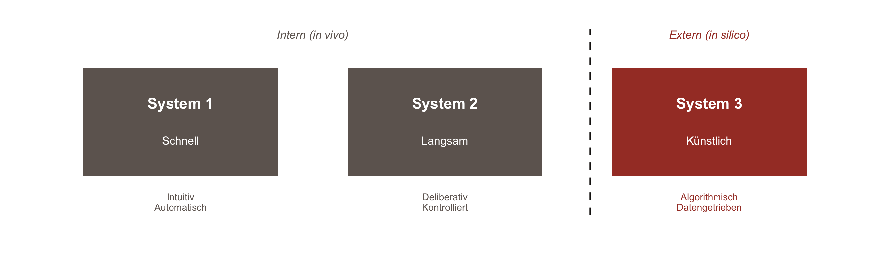
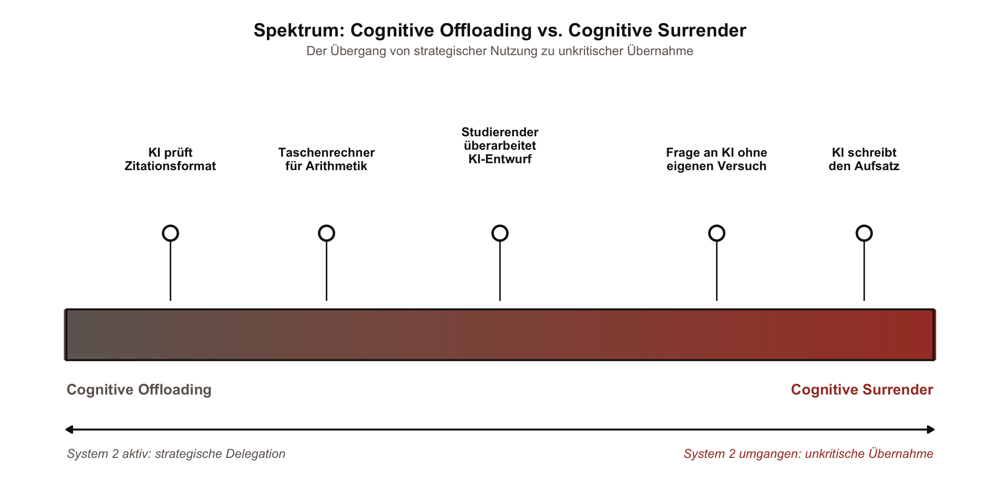
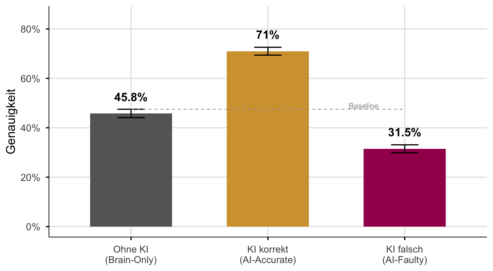
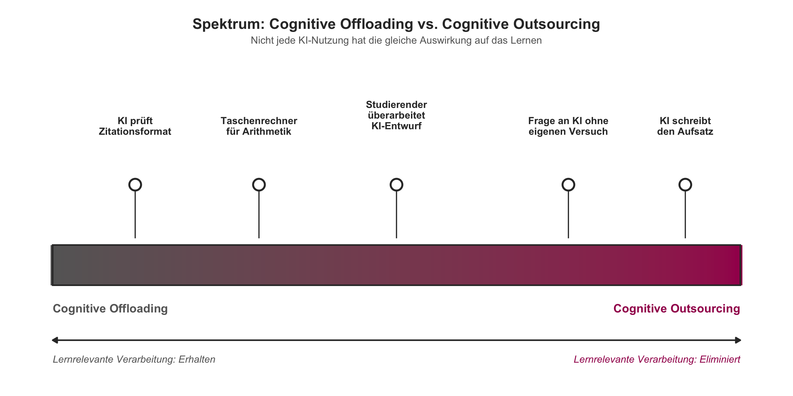
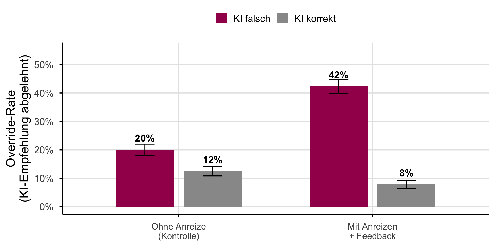

![]()

KI in der Hochschulbildung
Werkzeuge für Experten, Herausforderungen für Lernende
Werkzeuge für Experten,
Herausforderungen für Lernende
Wie funktionieren Sprachmodelle?
Statistische Mustervervollständigung auf Basis von Kontext
Nächstes-Wort-Vorhersage
Das Modell berechnet Wahrscheinlichkeiten für das nächste Wort basierend auf allem, was vorher kam.
Kontext bestimmt das Ergebnis
Derselbe Prompt mit leicht verändertem Kontext kann zu völlig anderen Antworten führen.
Kein “Verstehen”, kein “Wissen”, keine eingebaute Faktenkontrolle.
Fähigkeiten und Grenzen
Vielseitig einsetzbar:
- Text generieren und überarbeiten
- Bilder analysieren und erstellen
- Code schreiben und debuggen
- Web-Suche und Recherche
- Dokumente zusammenfassen
Aber:
- Keine eingebaute Faktenkontrolle
- Halluzinationen (überzeugend, aber falsch)
- Inkonsistente Ergebnisse
- Wissen hat ein Ablaufdatum
- Kein Verständnis, nur Muster
Vielseitig, aber immer überprüfen.
Ein überraschendes Ergebnis
Mit KI-Zugang:
+48% / +127%
Aufgaben korrekt gelöst
GPT Base / GPT Tutor
Ohne KI (später):
−17% / ±0%
vs. Kontrollgruppe
GPT Base / GPT Tutor
Quelle: Bastani u. a. (2025):
~1000 Gymnasiasten, GPT-4 Zugang während Mathe-Übungen
Das Paradox

Aufgabenleistung ≠ Lernen
Das Nadelöhr des Lernens

Kernaussage: Alles Lernen muss durch das Nadelöhr des Arbeitsgedächtnisses (Sweller 2024).
Erwünschte Schwierigkeiten
“Conditions that slow the rate of apparent learning often optimize long-term retention and transfer.”
Robert Bjork (Bjork und Bjork 2011)
Schwerer fühlt sich schlechter an, ist aber besser für langfristiges Lernen.
Die vier Strategien
Selbst generieren
Eigene Antworten formulieren
Verteilt lernen
Zeitliche Abstände einbauen
Aktiv abrufen
Wissen aus dem Gedächtnis holen
Variieren
Themen und Aufgaben mischen
KI kann jede dieser Strategien untergraben, wenn sie die kognitive Arbeit übernimmt.
Der Generierungseffekt

Selbst generierte Information wird besser behalten (Slamecka und Graf 1978).
Wenn KI generiert, was Studierende selbst produzieren sollten, entfällt der Lerneffekt.
Offloading vs. Outsourcing

Historische Analogien

Das Muster wiederholt sich. Aber: KI ist breiter als GPS oder Taschenrechner.
Experten vs. Lernende
Experten:
- Können Routine auslagern
- Können KI-Output bewerten
- Mehr Kapazität für Komplexes
Lernende:
- Können nicht bewerten
- Überspringen Grundlagen
- Risiko: “Fliessende Inkompetenz”
Dasselbe Werkzeug, fundamental unterschiedliche Auswirkungen.
Der Expertise-Umkehr-Effekt
Interaktiv: Klicke auf die Prozentwerte, um zu sehen, wie sich die optimale Lehrmethode je nach Vorwissen verändert.
config = ({
// Color palette
colors: {
highSupport: "#A3195B",
lowSupport: "#666666",
neutral: "#333",
background: "#f5f5f5"
},
// Line equations: y = intercept + slope * x
lines: {
high: { intercept: 65, slope: -0.4 },
low: { intercept: 25, slope: 0.4 }
},
// Input options
steps: [0, 20, 40, 60, 80, 100],
defaultValue: 20,
// Plot dimensions
plot: {
width: 900,
height: 480,
margins: { left: 70, bottom: 60, top: 30, right: 40 }
},
// Labels
labels: {
highSupport: "Hohe Unterstützung",
lowSupport: "Niedrige Unterstützung",
highExamples: ["📖 Worked Examples", "🧭 Direkte Instruktion"],
lowExamples: ["🧩 Problembasiertes Lernen", "🔍 Eigene Lösungswege"]
}
})
crossoverPoint = {
const { high, low } = config.lines;
return (high.intercept - low.intercept) / (low.slope - high.slope);
}
calcY = (line, x) => line.intercept + line.slope * x
viewof vorwissen = {
const input = Inputs.radio(config.steps, {
value: config.defaultValue,
label: "",
format: x => x + "%"
});
input.style.display = "none";
return input;
}
currentState = {
const x = vorwissen ?? config.defaultValue;
const highY = calcY(config.lines.high, x);
const lowY = calcY(config.lines.low, x);
const isHighBetter = x <= crossoverPoint;
return {
x,
highY,
lowY,
isHighBetter,
optimalY: isHighBetter ? highY : lowY,
suboptimalY: isHighBetter ? lowY : highY,
optimalLabel: isHighBetter ? config.labels.highSupport : config.labels.lowSupport,
optimalColor: isHighBetter ? config.colors.highSupport : config.colors.lowSupport,
suboptimalColor: isHighBetter ? config.colors.lowSupport : config.colors.highSupport
};
}
expertisePlot = {
const { colors, lines, plot, labels } = config;
const { x, highY, lowY, isHighBetter, optimalY, suboptimalY, optimalColor, suboptimalColor } = currentState;
const highLineData = [{x: 0, y: calcY(lines.high, 0)}, {x: 100, y: calcY(lines.high, 100)}];
const lowLineData = [{x: 0, y: calcY(lines.low, 0)}, {x: 100, y: calcY(lines.low, 100)}];
const labelOffsetY = 7;
const exampleBaseY = calcY(lines.high, 0) + labelOffsetY;
return Plot.plot({
width: plot.width,
height: plot.height,
marginLeft: plot.margins.left,
marginBottom: plot.margins.bottom,
marginTop: plot.margins.top,
marginRight: plot.margins.right,
style: { fontSize: "16px" },
x: {
domain: [0, 100],
label: "Vorwissen →",
labelOffset: 45,
ticks: [0, 50, 100],
tickFormat: d => d === 0 ? "Niedrig" : d === 50 ? "Mittel" : "Hoch"
},
y: {
domain: [0, 100],
label: "↑ Lerneffekt",
labelOffset: 50,
grid: true
},
marks: [
Plot.line(highLineData, {x: "x", y: "y", stroke: colors.highSupport, strokeWidth: 3}),
Plot.line(lowLineData, {x: "x", y: "y", stroke: colors.lowSupport, strokeWidth: 3}),
Plot.ruleX([x], {stroke: colors.neutral, strokeWidth: 1.5, strokeDasharray: "8,5"}),
Plot.dot([{x, y: suboptimalY}], {
x: "x", y: "y",
fill: suboptimalColor,
r: 8,
opacity: 0.4
}),
Plot.dot([{x, y: optimalY}], {
x: "x", y: "y",
fill: optimalColor,
r: 14,
stroke: "white",
strokeWidth: 3
}),
Plot.text([{x: 15, y: exampleBaseY}], {
x: "x", y: "y", text: [labels.highExamples[0]], fill: colors.highSupport, fontSize: 13
}),
Plot.text([{x: 15, y: exampleBaseY - 6}], {
x: "x", y: "y", text: [labels.highExamples[1]], fill: colors.highSupport, fontSize: 13
}),
Plot.text([{x: 85, y: exampleBaseY}], {
x: "x", y: "y", text: [labels.lowExamples[0]], fill: colors.lowSupport, fontSize: 13
}),
Plot.text([{x: 85, y: exampleBaseY - 6}], {
x: "x", y: "y", text: [labels.lowExamples[1]], fill: colors.lowSupport, fontSize: 13
}),
Plot.text([{x: 88, y: calcY(lines.high, 100) - 5}], {
x: "x", y: "y", text: [labels.highSupport], fill: colors.highSupport, fontSize: 15, fontWeight: "bold"
}),
Plot.text([{x: 12, y: calcY(lines.low, 0) - 5}], {
x: "x", y: "y", text: [labels.lowSupport], fill: colors.lowSupport, fontSize: 15, fontWeight: "bold"
})
]
});
}
buttonGroup = {
const { x, optimalColor } = currentState;
const { colors, steps } = config;
const buttonStyle = (isSelected, selectColor) => `
padding: 12px 18px;
border: none;
background: ${isSelected ? selectColor : colors.background};
color: ${isSelected ? 'white' : '#333'};
font-size: 1em;
font-weight: ${isSelected ? 'bold' : 'normal'};
cursor: pointer;
border-right: 1px solid #ddd;
transition: background 0.15s ease;
`;
const container = html`<div style="display: flex; border-radius: 8px; overflow: hidden; border: 2px solid #ddd;"></div>`;
steps.forEach(v => {
const isSelected = x === v;
const selectColor = v <= crossoverPoint ? colors.highSupport : colors.lowSupport;
const btn = html`<button style="${buttonStyle(isSelected, selectColor)}">${v}%</button>`;
btn.onclick = () => {
viewof vorwissen.value = v;
viewof vorwissen.dispatchEvent(new Event('input', {bubbles: true}));
};
container.appendChild(btn);
});
return container;
}
html`<div style="display: flex; align-items: center; gap: 40px;">
<div>${expertisePlot}</div>
<div style="display: flex; flex-direction: column; align-items: center; gap: 20px; min-width: 280px;">
<div style="font-weight: bold; font-size: 1.1em;">Vorwissen des Lernenden</div>
<div>${buttonGroup}</div>
<div style="font-size: 1.3em; text-align: center; padding: 15px; background: ${currentState.optimalColor}22; border-radius: 8px; border-left: 4px solid ${currentState.optimalColor};">
<span style="color: ${currentState.optimalColor}; font-weight: bold;">${currentState.optimalLabel}</span><br>
<span style="font-size: 0.8em; color: #666;">ist effektiver</span>
</div>
</div>
</div>`Der Expertise-Umkehr-Effekt (Kalyuga 2009).
Die bisherigen Kurse haben gezeigt:
Es kommt darauf an, WER das Werkzeug nutzt.
Aber warum genau ist die Situation für Lernende so problematisch?
Das Evaluationsparadox
Um KI-Output kritisch zu bewerten, braucht man die Kompetenz, die erst durch Lernen entsteht.
Für Experten:
Bewertung möglich, weil Wissen vorhanden
Für Lernende:
Bewertung unmöglich, weil Wissen erst aufgebaut wird
Das ist die zentrale Spannung beim KI-Einsatz in der Lehre.
Vier kognitive Operationen
Abrufen
Wissen aus dem Gedächtnis aktivieren
Generieren
Eigene Lösungen produzieren
Verknüpfen
Elemente vergleichen und integrieren
Überwachen
Gegen interne Kriterien bewerten
Diese Operationen bauen Schemata auf. KI kann jede einzelne ersetzen.
Das Paradox visualisiert
Kannst du diesen KI-Output bewerten?
Prompt: “Erkläre die Pathophysiologie der diabetischen Ketoazidose.”
KI-Antwort: “Bei DKA führt Insulinmangel zu unkontrollierter Lipolyse. Die freigesetzten Fettsäuren werden in der Leber zu Ketonkörpern (Acetoacetat, β-Hydroxybutyrat) metabolisiert. Die resultierende metabolische Azidose mit erhöhter Anionenlücke triggert kompensatorische Kussmaul-Atmung…”
Ist das korrekt? Fehlt etwas? Ist etwas subtil falsch?
Deine Studierenden sind in genau dieser Position für DEIN Fach.
Was das für die Lehre bedeutet
Studierende müssen interne Modelle aufbauen, bevor sie KI kritisch nutzen können.
“Critical thinking is not a skill. There is not a set of critical thinking skills that can be acquired and deployed regardless of context.”
Daniel Willingham (Willingham 2008)
Die vier Operationen (Abrufen, Generieren, Verknüpfen, Überwachen) müssen im Kopf der Lernenden stattfinden, nicht in der KI.
Aber warum lagern Studierende überhaupt aus?
Sind sie faul? Unehrlich? Oder… rational?
Ein Gespräch an der BFH
Ein Mathematik-Dozent berichtet:
“Wir nutzen lokale KI-Modelle für Prüfungserstellung und Korrektur. Aber bei Studierenden sehen wir: Sie kommen nicht zu Übungsstunden, stellen keine Fragen, üben nicht. Ihnen fehlt die intrinsische Motivation.”
Die Diagnose:
Motivationsproblem
KI-Lösung: Gamifizierte KI-Übungen, KI-Tutoren die “engagieren”
Das eigentliche Problem:
Cognitive Overload
Die Aufgaben überlasten das Arbeitsgedächtnis, weil die nötigen Schemata fehlen.
Falsche Diagnose führt zu falscher KI-Intervention. Nicht die Ameise ist das Problem, sondern der Strand.
The Beach, Not the Ant
Studierende als rationale Akteure
Wenn die Umgebung Outsourcing zum einfachsten Weg macht,
werden rationale Akteure outsourcen.
Das ist kein Charakterproblem. Es ist ein Designproblem.
Aufgabendesign
Was wird verlangt?
Prüfungsformat
Was wird gemessen?
KI-Zugänglichkeit
Was ist verfügbar?
Strukturelle Anreize
Was ist der einfachste Weg?
Gestalte den Strand, nicht die Ameise
Kognitive Arbeit als Produkt
Aufgaben gestalten, bei denen der Denkprozess das Ergebnis ist, nicht nur das Endprodukt.
Prozess bewerten
Den Weg zum Ergebnis prüfen, nicht nur das Ergebnis selbst.
Produktiven Struggle ermöglichen
Den Weg des eigenen Denkens zum Weg des geringsten Widerstands machen.
Der richtige KI-Einsatz: KI für Dozierende zum Redesign der Lernumgebung, nicht KI für Studierende zum Umgehen des Lernprozesses.
Die Kernaussage
Das Evaluationsparadox:
Studierende können KI-Nutzung nicht selbst regulieren.
Ihnen fehlt die Kompetenz, um KI-Output zu bewerten.
Bounded Rationality:
Studierende werden KI-Nutzung nicht selbst regulieren.
Die Umgebung macht Outsourcing zum rationalen Weg.
Zusammen: Wir können uns nicht auf das Urteilsvermögen der Studierenden allein verlassen.
KI-Werkzeuge sind für Experten gemacht.
Fundamente zuerst aufbauen. Umgebungen gestalten, die Denken erfordern. Produktiven Struggle als natürlichen Weg ermöglichen.
Referenzen
Bastani, Hamsa, Osbert Bastani, Alp Sungu, Haosen Ge, Özge Kabakcı, und Rei Mariman. 2025. „Generative AI Without Guardrails Can Harm Learning: Evidence from High School Mathematics“. Proceedings of the National Academy of Sciences of the United States of America 122 (26): e2422633122. https://doi.org/10.1073/pnas.2422633122.
Bjork, Elizabeth Ligon, und Robert A. Bjork. 2011. „Making Things Hard on Yourself, but in a Good Way: Creating Desirable Difficulties to Enhance Learning“. In Psychology and the Real World: Essays Illustrating Fundamental Contributions to Society, 56–64. New York, NY, US: Worth Publishers.
Dahmani, Louisa, und Véronique D. Bohbot. 2020. „Habitual Use of GPS Negatively Impacts Spatial Memory During Self-Guided Navigation“. Scientific Reports 10 (1): 6310. https://doi.org/10.1038/s41598-020-62877-0.
Kalyuga, Slava. 2009. „The Expertise Reversal Effect“. In Managing Cognitive Load in Adaptive Multimedia Learning, 58–80. IGI Global Scientific Publishing. https://doi.org/10.4018/978-1-60566-048-6.ch003.
Simon, Herbert A., und John E. Laird. 2019. The Sciences of the Artificial: Reissue of the Third Edition with a New Introduction by John Laird. Cambridge, Massachusetts: MIT Press.
Slamecka, Norman J., und Peter Graf. 1978. „The Generation Effect: Delineation of a Phenomenon“. Journal of Experimental Psychology: Human Learning and Memory 4 (6): 592–604. https://doi.org/10.1037/0278-7393.4.6.592.
Sparrow, Betsy, Jenny Liu, und Daniel M. Wegner. 2011. „Google Effects on Memory: Cognitive Consequences of Having Information at Our Fingertips“. Science (New York, N.Y.) 333 (6043): 776–78. https://doi.org/10.1126/science.1207745.
Sweller, John. 2024. „Cognitive Load Theory and Individual Differences“. Learning and Individual Differences 110 (Februar): 102423. https://doi.org/10.1016/j.lindif.2024.102423.
Willingham, Daniel T. 2008. „Critical Thinking: Why Is It So Hard to Teach?“ Arts Education Policy Review 109 (4): 21–32. https://doi.org/10.3200/AEPR.109.4.21-32.
KI in der Lehre: Refresher 2026